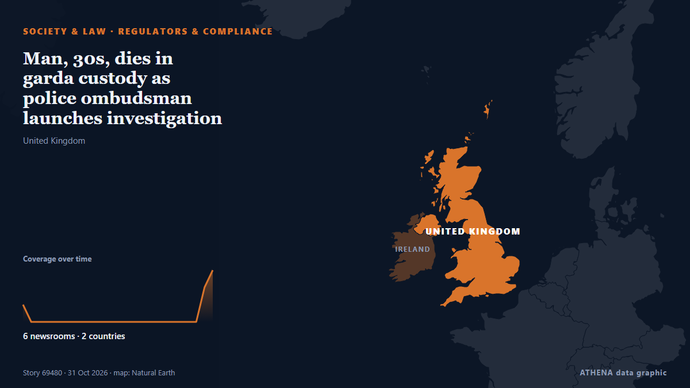

Регуляторы и комплаенс
| 18 окт. | 0 |
|---|---|
| 19 окт. | 0 |
| 20 окт. | 0 |
| 21 окт. | 0 |
| 22 окт. | 1 |
| 23 окт. | 0 |
| 24 окт. | 0 |
| 25 окт. | 0 |
| 26 окт. | 0 |
| 27 окт. | 5 |
| 28 окт. | 4 |
| 29 окт. | 2 |
| 30 окт. | 4 |
| 31 окт. | 0 |
Заголовки приводятся на английском языке, как они были опубликованы.

Man, 30s, dies in garda custody as police ombudsman launches investigation
A man, aged in his 30s, died in Kildare Garda Station at around 9.35am this morning, October 31. из Irish Mirror
Competition watchdog to investigate Meta terms for publishers and businesses
The Facebook and Instagram owner said it believes there are ‘no grounds for a competition investigation’. из Evening Standard (London)
Homes evacuated in Shankill area as terrorism probe launched
Items recovered as 35-year-old man detained on Friday. из The Irish News (Belfast)
Communications watchdog fines Google, Apple over in-app payment policies
SEOUL, Oct. 28 (Yonhap) -- South Korea's broadcasting and telecommunications reg... из Yonhap (English)
Galatasaray edge Fenerbahce 2-1 as Osimhen delivers derby double
Nigerian striker scores twice in first half as reigning champions hold off Yellow Canaries' second-half fightback. из Anadolu Agency (English)
Pentagon IG refuses to investigate Starlink/Starshield slowdown in Ukraine
Inspector general rejected request from Democratic and Republican senators. из Ars Technica
Controversial Islamic cleric shot dead in northern Nigeria
Yahaya Masussuka had posted videos in which he rejected some elements of mainstream Islam. из BBC News
Police close investigation into Hayden Panettiere’s death
Police in South Carolina close their investigation into the overdose death of the actor, following a coroner's finding that it was accidental. из ABC News Australia
Niger Miners’ Saga: NSCDC death cell cleaned to destroy evidence, probe panel member says
Deji Adeyanju says the NSCDC detention cell in Minna was cleaned, disinfected and renumbered after the deaths of detainees in an alleged attempt to destroy evidence. из Premium Times
Consumer protection regulator imposes ₹1 lakh fine on Sunrise Foods over ‘100% whole wheat bread’ claim
Greece’s market authority imposed €659,647 in fines in October 2026, including penalties for excessive meat profit margins, consumer protection breaches and counterfeit goods. из Greek City Times
ADC asks Tinubu to probe alleged payments for appointments
The Makinde-Daura Presidential Campaign Organisation has called on the Economic and Financial Crimes Commission (EFCC) to investigate allegations that serving ministers paid billions of naira to… из Vanguard